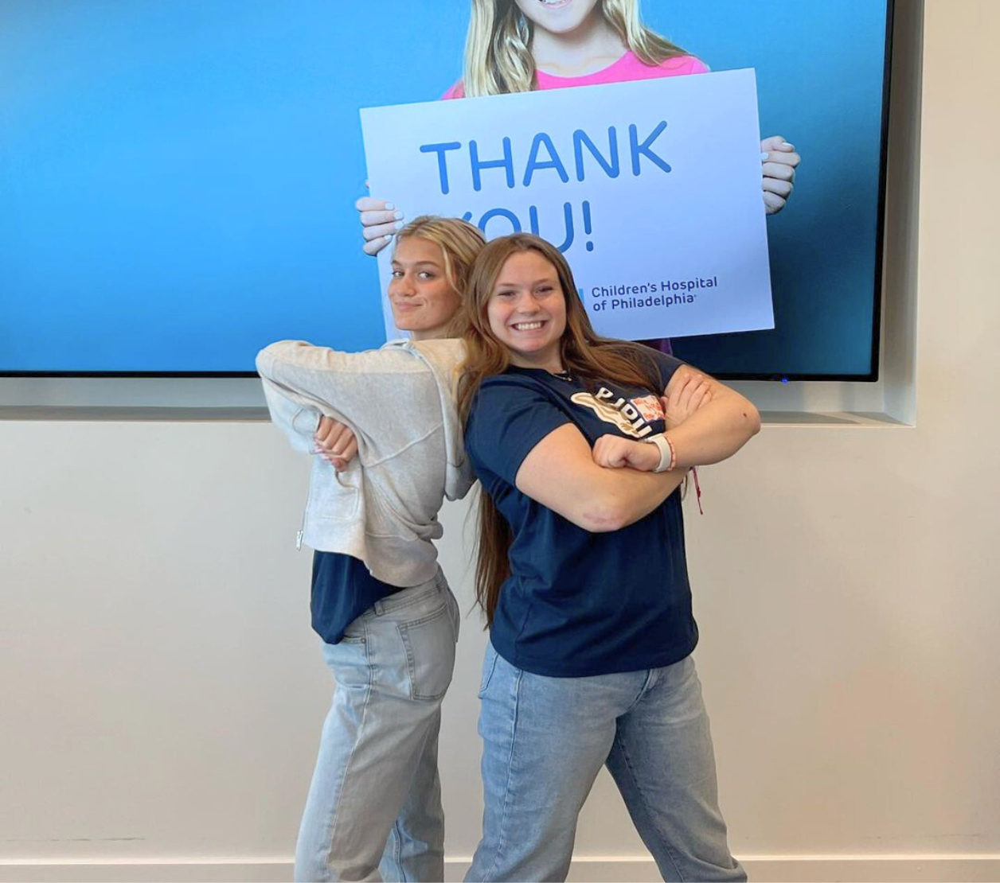

Who we support
What is Pantheron?
WHAT IS IT
Pantheron is Pope John Paul II High School's annual charitable dance marathon. Through a partnership with three organizations, the funds raised by the event are donated to support pediatric causes.
WHO WE SUPPORT

Year by Year Donations
2023
$45,267.31
2022
$41,502.39
2021
$40,629.57
Our Team
Who's behind it all?
Pantheron is a student-led organization. Students meet once a week throughout the year to plan and raise awareness for the cause. This year, our committe consists of 14 members, led by seniors Allie McCafferty and Meredith Oister.
100+
Hours spent planning
14
Members
